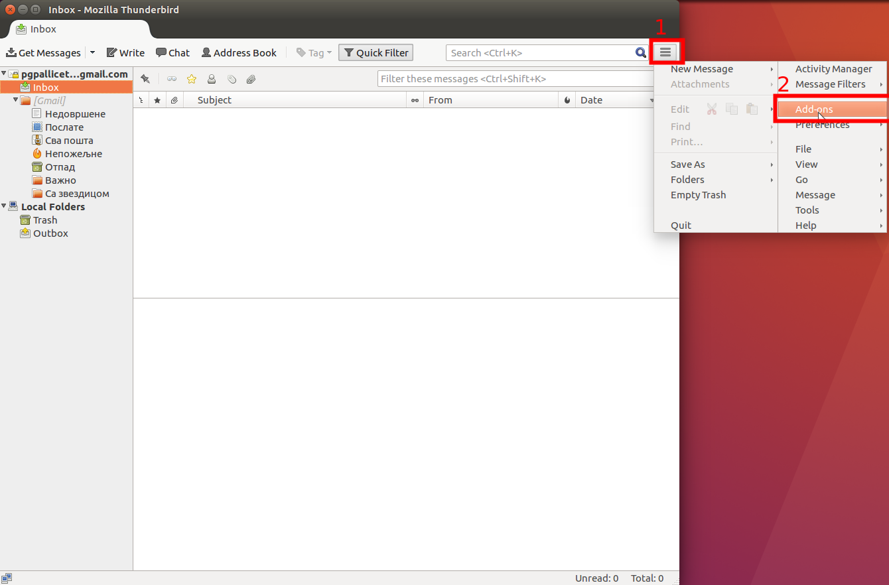
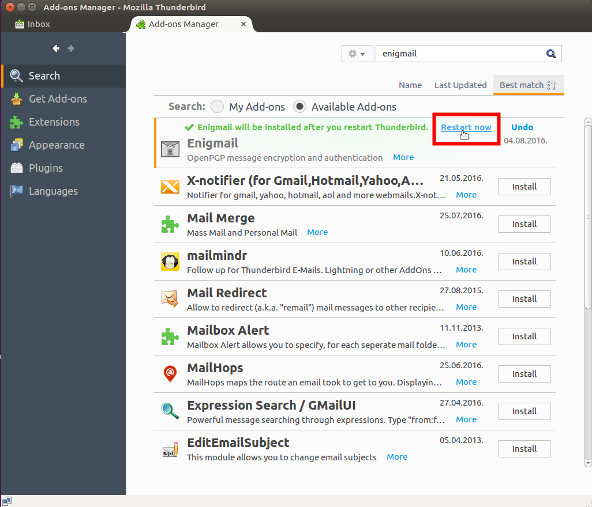
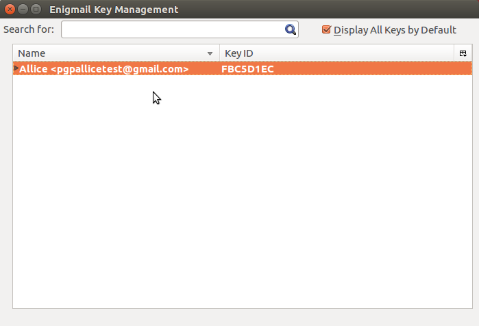

Linux | Kako funkcioniše GPG
1. Šifrovanje i Dešifrovanje
Kako bi šifrovali vašu elektronsku poštu neophodno je da imate GPG (eng. Gnu Privacy Guard) program koji pruža funkcionalnosti šifrovana, dešifrovanja, digitalnog potpisivanja i provere digitalno potpisanih poruka.
Preduslov za zaštićenu razmenu elektronske pošte je da obe strane koriste GPG.
Tako da kada prođete kroz ovaj tutorijal i namestite svoje GPG ključeve bićete u mogućnosti da razmenjujete šifronu poštu samo sa osobama koje takođe poseduju i koriste GPG, nezavisno od mejl provajdera, mejl protokola i operativnog sistema.
Na većini GNU/Linuks operativnih sistema GPG program je podrazumevano uključen uz softver koji se instalira zajedno sa operatvnim sistemom, tako da instalacija najverovatnije GPG-a nije potrebna.
Treba napomenuti i da je GPG program koji se pokreće iz terminala, ali postoje programi koji pružaju grafički korisnički interfejs (više na sajtu GPG-a). Da bi proverili da li vaš GNU/Linuks ima GPG instaliran samo u terminalu otkucajte:
ili
i prikazaće se verzija GPG-a kao i algoritmi koje podržava.

Figure 1: Verzije 1.4 i 2.1 GPG-a koje su došle instalirane zajedno sa Ubuntu 16.04 operativnim sistemom.
Ukoliko ipak nemate GPG instaliran to možete učiniti komandom:
Pored GPG-a, potrebni su vam i klijent elektronske pošte kao i dodatak mejl klijentu koji za vas barata GPG ključevima tj. olakšava korišćenje GPG-a kroz integrisani grafički korisnički interfejs unutar Thunderbird mejl klijenta
Početnicima preporučujemo Thunderbird kao mejl klijenta jer je jednostavan za korišćenje, čiju instalaciju i podešavanja objašnjavamo u ovom tutorijalu. Thunderbird podržava Enigmail dodatak koji se oslanja na GPG i pruža jednostavan interfejs između mejl klijenta i GPG-a. Alternativni mejl klijenti su: Claws Mail, KMail, Evolution, kao i drugi, za više informacija posetite sajt GPG-a.
2. Instalacija Thunderbird-a
Instaliranje Thunderbird-a možete obaviti na najmanje dva načina: 1. preuzimanjem preograma sa zvaničnog sajta,

Figure 2:Preuzmite Thunderbird za GNU/linuks.
2. ili direktno iz terminala komandom.
za distribucije zasnovane na Debian-u.
3. Podešavanje Thunderbird-a

Figure 3: Prvo pokretanje thunderbird-a. Izaberite opciju korišćenja već postojeće mejl adrese.
Predpostavlja se da već imate mejl adresu koju koristite, i za koju želite da generišete GPG ključeve za zaštitu privatnosti poruka koje razmenjujete.
Posle čega treba da podesite mejl adresu, šifru za pristup toj mej adresi, kao i protokol za razmenu pošte između servera mejl provajdera i vašeg lokalnog mejl kljijenta

Figure 4: Izaberite IMAP ili POP3 u zavisnosti da li želite da čuvate poštu i na vašem računaru.

Figure 5: Zavisno od mejl provajdera, može biti tražena dozvola za korišćenje klijenta za pristup vašem mejl nalogu. Ako ne dobijete ovaj prozor, niste ništa pogrešili.
Što se podešavanja mejl naloga, to bi bilo sve. Sada će vam se mejl klijent sinhronizovati sa mejl serverom i po potrebi preuzeti nove poruke.

Figure 6: Funkcionalan mejl klijent.
4. Instaliranje Enigmail-a
Sada je potrebno da generišemo ključeve za našu mejl adresu.
To možemo uraditi i iz terminala koristeći GPG, ali je za početnike bolje da to urade kroz Thunderbird-ov dodatak Enigmail.
Figure 7: Da bi instalirali Enigmail potrebo je da u Thunderbird-u izaberete opciju za dodatke (eng. Add-ons).

Figure 8: U polju za pretragu dodataka unesite "Enigmail".
Figure 9: Instalirajte najnoviju verziju Enigmail-a i restartujte Thunderbird.
5. Kreiranje ključeva kroz Enigmail

Figure 10: Kada se Enigmail restartuje, automatski će se pokrenuti čarobnjak (eng. Wizard). Ukoliko se sam ne pokrene možete ga i ručno pokrenuti iz Opcije "Enigmail">"Setup Wizard"

Figure 11: Najbolje je izabratni standardni način konfiguracije prilagođen početnicima.
Figure 12: Pitaće vas za šifru kojom će te pristupati tajnom kljuˇvu za vašu mejl adresu. Ukoliko imate više ličnih mejl adresa u Thunderbird-u, odaberite za koju kreirate ključeve.
Šifra za tajni (negde se zove i privatni) ključ je samo još jedan sigurnosni mehanizam namenjen da samo pravoj osobi odobri upotrebu najkritičnijih upotreba tajnog ključa kao što su digitalno potpisivanje i dešifrovanje pristigle pošte.
Šifra je takođe od velike važnosti jer u slučaju da izgubite tajni ključ, a ukoliko je šifra bila dovoljno jaka, niko ko dođe u posed vašegg tajnog ključa neće moći da ga upotrebi bez znanja vaše tajne šifre.
Mi smo u našem primeru odabrali dosta dugačku šifru od 19 karaktera što nikako nije preterivanje ukoliko predhodno nemate iskusva u sigurnom skladištenju i prenosu tajnih GPG ključeva.

Figure 13: Pošto unesete sigurnu šifru, počeće proces generisanja ključa kome je potrebno dosta entropije. Kako bi ste obezbedili entropiju i ubrzali proces, aktivno pretražujte internet, mrdajte miša, kuckajte po tastaturi, ... Proces pože potrajati, pa je važno imati strpljenje i ne prekidati program.

Figure 14:Kada se proces završi ponudiće vam da sačuvate sertifikat za opoziv ključa. To obavezno prihvatite i sačuvajte sertifikat.
Sertifikat za opoziv (eng. Revocation Certificate) se koristi u slučaju da izgubite tajni ključ ili da ne možete da se setite šifre za pristup tajnom ključu.
U tom slučaju Enigmail ili GPG programu prosleđujete ovaj sertifikat koji na server javnih ključeva (eng. Public Key Server) šalje informaciju o opozivu ključa i nevalidnosti istog za dalju upotrebu.
Ta informacija je od značaja svima koji žele da šifrovane poruke šalju vama da ne koriste opozvani ključ jer nećete moći da ih dešifrujete.
Ukoliko vam program ne ponudi da sačuvate sertifikat za opoziv, to možete i naknadno uraditi iz programa.

Figure 15: Pitaće vas za šifru kojom pristupate vašem tajnom GPG ključu.

Figure 16: Sačuvajte sertifikat za opiziv.
Figure 17: Sačuvajte sertifikat i na nekom spoljnom medijumu kako bi ste imali rezervnu kopiju.

Figure 18: Završilismosagenerisanjemključeva i sertifikata.

Figure 19: Kraj.
6.Objavljivanje vašeg javnog ključa
Sada kada ste napravili vaš GPG par ključeva, potrebno ja da objavite vaš javni ključ na nekom od servera javnih ključeva. Kako bi svako ko zna vašu mejl adresu mogao da proveri na serveru javnih ključeva GPG ključ koji odgovara vašoj mejl adresi i koristi ga kako bi vam poslao šifrovanu poštu.
Figure 20: Kako bi otpremili naš javni ključ, treba da odemo u "Enigmail > Key Management".
Figure 21: Menadžer ključeva u Enigmail-u.
Figure 22: Desni klik na ključ i odaberete opciju "Upload Public keys to Keyserver".
Figure 23: Sačekajte da se ključ pošalje.
6.1 Saznajte na koji server ste poslali ključ:
Sada se vaš javni ključ nalazi na nekom od servera na koji ste ga poslali. Kako bi saznali adresu servera na koji je vaš ključ poslat možete videti otić u "Enigmail > "Preferences".
Onda u "Basic" tabu kliknuti na "Display ExpertSettings and Menus", i zatim otići u "Keyserver" tab.
Figure 24: "Display Expert Settings and Menus"

Figure 25: U "Keyserver" tabu su najverovatnije podešeni serveri: pool.sks-keyservers.net, keys.gnupg.net, pgp.mit.edu.
6.2 Proverite gde je ključ iz internet pretraživača
Da bi ste se uverili da je ključ poslat i da se zaista nalazi na pomenutim serverima, možete iz vašeg internet pretraživača posetiti stranice pgp.mit.edu ili sks-keyservers.net i u polja za pretragu uneti vašu mejl adresu za koju ste upavo generisali ključeve.
Figure 26: Pretraga pgp.mit.edu servera javnih ključeva.

Figure 27: retraga sks-keyservers.net servera javnih ključeva.
7. Razmena šifrovanih poruka
Da bi ste poslali nekome šifrovanu poruku morate imati njegov javni ključ. Kako bi ste nabavili nečiji javniključ, trebate otići ponovo u "Enigmail > Key Management", pa kliknite na "Keyserver > Search for Keys", i zatim unesite mejl adresu osobe kojoj želite poslati šifrovanu elektronsku poruštu.

Figure 28: "Enigmail > Key Management" > "Keyserver > Search for Keys".
Figure 29: Unesite mejl adresu osobe kojoj želite poslati šifrovanu elektronsku poruštu..
Figure 30: Ako na serveru postoji željeni ključ jednostavno ga označite i uvezite u Enigmail.
Ukoliko željeni ključ ne postoji to može biti ili zato što nije napravljen i/ili poslat na server, ili je ključ napravljen i poslat na neki server, samo se nije sinhronizovao sa serverom na kojem ga vi tražite.
U tom slučaju treba sačekati nekoliko minuta da bi se ključ našao na svim javnim serverima javnih GPG ključeva.
Takođe se može desiti da pretraživanjem za unetu adresu kontakta dobijete više ponuđenih GPG ključeva.
U tom slučaju se treba obratiti kontaktu za informaciju o aktuelnom važećem ključu.
Figure 31: Po preuzimanju željenog javnog ključa biće prikazana poruka o uspešnom preuzimanju kao i jedinstveni otisak (eng. Fingerprint) preuzetog ključa..
Figure 32: Po preuzimanju ključa vašeg kontakta, njegov ključ će se takođe pojaviti u vašoj lokalnoj bazi GPG ključeva unutar Enigmail-a.
7.1. Slanje šifrovanih mejlova
Sada kada imate vaš par GPG ključeva, kao i javni ključ kontakta kome želite poslati privatnu šifrovanu poruku, sve što treba da radite jeste da sastavite poruku i unesete mejl adresu kontakta čiji javni GPG ključ imate.
Nakon sastavljanja poruke štiklirajte ikoniće ključa i olovke kako bi ste sastavljenu poruku šifrovali i digitalno potpisali pre nego što je pošaljete.

Figure 33: Štiklirajte ikoniće ključa i olovke
7.2. Primanje šifrovanih mejlova
Predpostavljajući da već imate javni kljuć pošiljaoca, primljenu šifrovanu poruku Enigmail će prepoznati i ponuditi daje dešifrujete.

Figure 34: Pristigla šifrovana poruka.

Figure 35: Kada kliknete na primljenu poruku, pojaviće se prozor za unos šifre za pristup vašemtajnom ključu kako biste dešifrovali primljenu poruku. Unesite vašu GPG šifru.
Figure 36: Dešifrovana poruka.
dodatni materijal